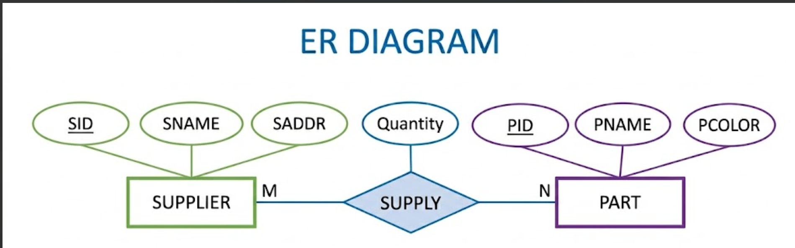

To design and implement Supplier, Part and Supply relations and perform SQL operations.
Consider the relations PART, SUPPLIER and SUPPLY. The Supplier relation holds information about suppliers. The attributes SID, SNAME and SADDR describe the supplier. The Part relation holds PID, PNAME and PCOLOR. The Supply relation contains SID and PID identifying the supplier and supplied part respectively along with Quantity.

SUPPLIER ------------------------- SID PK SNAME SADDR PART ------------------------- PID PK PNAME PCOLOR SUPPLY ------------------------- SID FK → SUPPLIER.SID PID FK → PART.PID Quantity PRIMARY KEY (SID, PID)
CREATE TABLE Supplier( SID NUMBER PRIMARY KEY, SNAME VARCHAR2(30), SADDR VARCHAR2(50) ); CREATE TABLE Part( PID NUMBER PRIMARY KEY, PNAME VARCHAR2(30), PCOLOR VARCHAR2(20) ); CREATE TABLE Supply( SID NUMBER, PID NUMBER, Quantity NUMBER, PRIMARY KEY(SID,PID), FOREIGN KEY(SID) REFERENCES Supplier(SID), FOREIGN KEY(PID) REFERENCES Part(PID) );
INSERT INTO Supplier VALUES(1,'ABC Suppliers','Bangalore'); INSERT INTO Supplier VALUES(2,'XYZ Traders','Mysore'); INSERT INTO Supplier VALUES(3,'PQR Industries','Hubli'); INSERT INTO Part VALUES(101,'Bolt','Red'); INSERT INTO Part VALUES(102,'Nut','Blue'); INSERT INTO Part VALUES(103,'Washer','Green'); INSERT INTO Part VALUES(104,'Pipe','Red'); INSERT INTO Supply VALUES(1,101,500); INSERT INTO Supply VALUES(1,102,300); INSERT INTO Supply VALUES(2,103,200); INSERT INTO Supply VALUES(2,104,150); INSERT INTO Supply VALUES(3,101,250);
Obtain the details of parts supplied by supplier 'ABC Suppliers'
SELECT P.* FROM Part P JOIN Supply S ON P.PID=S.PID JOIN Supplier SP ON SP.SID=S.SID WHERE SP.SNAME='ABC Suppliers';
| PID | PNAME | PCOLOR |
|---|---|---|
| 101 | Bolt | Red |
| 102 | Nut | Blue |
Obtain names of suppliers who supply 'Bolt'
SELECT SP.SNAME FROM Supplier SP JOIN Supply S ON SP.SID=S.SID JOIN Part P ON P.PID=S.PID WHERE P.PNAME='Bolt';
| SNAME |
|---|
| ABC Suppliers |
| PQR Industries |
Delete parts which are in color Red
DELETE FROM Part WHERE PCOLOR='Red';
| PID | PNAME | PCOLOR |
|---|---|---|
| 102 | Nut | Blue |
| 103 | Washer | Green |
The Supplier-Part-Supply database was successfully designed and implemented. All required SQL queries executed successfully.